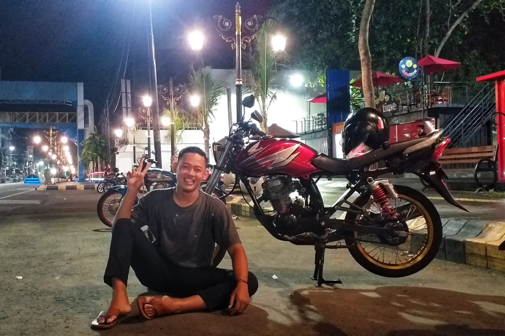

| ABOUT | PORTOFOLIO | BIODATA |
ABOUT MENama saya Tio Dwi Anggoro lahir di Nganjuk pada tanggal 03 july 2001, Saya anak kedua dari dua bersaudara dibesarkan dari keluarga sederhana, Ayah bekerja sebagai petani dan Ibu sebagai Ibu Rumah Tangga. Saya akan menceritakan tentang riwayat pendidikan saya dari Sekolah Dasar sampai ke universitas. Saya masuk sekolah dasar di SDN GETAS 1 dan lulus pada thn 2014, lalu melanjutkan sekolah menengah pertama di SMPN 1 PACE dan lulus pd thn 2017,lalu melanjutkan sekolah menengah atas di SMAN 1 TANJUNGANOM dan sekarang saya menenmpuh pendidikan di UNIVERSITAS GAJAYANA MALANG. Alasan saya memilih melanjutkan pendidikan di UNIVERSITAS GAJAYANA MALANG dan memilih jurusan sistem informasi karena memiliki peluang kerja yang banya. |
||